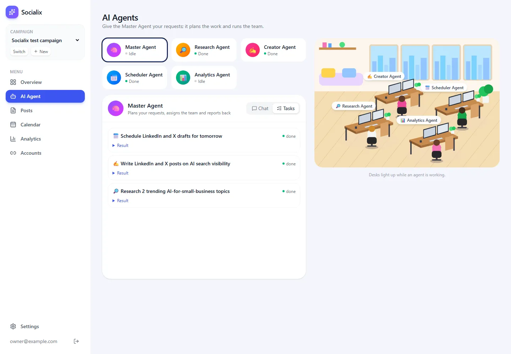

Master Agent
The Master Agent plans a request and runs team members through the assign_task tool.
▶ Watch this part (01:14:46)Chatting with four agents one by one is still manual work: you research with one, copy the result to the next, and so on. This step adds a Master Agent that does the coordinating for you. You give it one request; it splits the request into tasks, hands each task to the right team member, passes results along, and reports back. This pattern is called a multi-agent system with an orchestrator.
In our app the whole mechanism is two tools (assign_task and list_tasks) and one function that calls itself: the agent loop runAgent() in src/lib/ai/runner.ts. The concept page How the Agent Team Works follows one request end to end; this page explains the code.
What the video does
1. The idea: a manager and employees
(at 74:51) The presenter names the problem: giving tasks to each agent separately is manual. (at 75:15) He shows the architecture on his Eraser canvas, titled "Master Agent Architecture". The user's request (example: "Create 5 social media posts about AI tools and schedule them for next week") goes to the Master Agent, which plans, assigns, coordinates and collects results. It assigns tasks to the Research, Content, Scheduler and Analytics agents, which use their tools (a cloud desktop, Blotato, the social platforms), and the Master returns the final response. A row underneath lists the infrastructure: database, file storage, background jobs and secrets.
(at 76:05) "It's kind of manager and the employee": the manager has all the information and assigns work; each employee reports back when done, and can ask the manager when it needs something.
2. One prompt for the whole feature
(at 76:51) In a new Claude Code conversation he pastes a long prompt from his Eraser document that describes the UI and the logic. It begins:
Implement the Master Agent feature with a larger, highlighted card alongside the four smaller agent cards on the Agent page. The Master Agent should have its own Chat UI and act as the main coordinator, receiving user requests, planning tasks, assigning work to appropriate agents, tracking progress, reviewing outputs, and requesting clarification from users when needed. Other agents can communicate with the Master Agent to ask questions or provide updates ...(at 77:41) Claude Code reports that it tested several scenarios and pushed database changes. The work still runs in the request for now; background jobs with Inngest come in the next chapter.
3. Trying it
(at 78:06) The Master card is larger and highlighted, with the greeting "Hi! I'm your Master Agent. I coordinate your AI team..." He types "I want to schedule 4 Post next 2 days and want to post on instagram channel". The Master asks for details first (does he have content or images, a preferred time?). He answers that the team should create content for his niche and post in the morning (at 79:00). The Master replies that the Research Agent will find niche topics, the Creator will write captions and the Scheduler will plan morning times.
The Tasks tab then shows a plan, "Schedule 4 Instagram posts for next 2 days", with three steps, each marked Done: "Identify niche topics for Instagram posts" (Research), "Create content and captions for 4 Instagram posts" (Creator, after step 1) and "Schedule 4 Instagram posts in the mornings over 2 days" (Scheduler, after step 2), plus a "Master Agent's report". He says plainly that the assignment is real but the task outputs are "just a dummy" for now (at 80:14).
(at 81:25) In Drizzle Studio he shows the new tables: agent_communications, agent_messages, agent_plans and agent_tasks; a task row has a position, title, instructions, a depends_on list and a status. Finally (at 82:12) he replaces the Publisher Agent with an Analytics Agent, because Scheduler and Publisher did the same job, and asks Claude Code to update the instructions, the office tags and names everywhere. The chapter ends with a branch "master agent", a pull request and a CodeRabbit review (84:36–85:47).
How our app does it
Our version keeps the idea and makes it very small. There is no separate plan table, no messages between agents and no dependency list. Instead, the Master is an ordinary agent whose tools happen to run other agents. Claude itself does the planning: it decides the order of assign_task calls, and it copies the results of one task into the instructions of the next.
1. The Master's instructions
These are lines 83–88 of src/lib/ai/agents.ts (the whole file is on the previous page):
master: `You are the Master Agent of a social media AI team. You plan the owner's requests and delegate them.
Your team: the Research Agent (finds trends and facts with web search), the Creator Agent (writes platform-ready posts and saves them as drafts), the Scheduler Agent (picks posting times and schedules drafts through the WordPress Social Autopilot), and the Analytics Agent (reports on what was published).
- Break each request into tasks and call assign_task for each, in a sensible order (research before writing, writing before scheduling). Pass along the results each step needs.
- Do the work through the team; do not invent research or write final posts yourself.
- When the work is done, reply to the owner with a short summary: what was researched, which drafts exist, what is scheduled and what still needs the owner's approval.
- If the request is unclear, ask one short question instead of guessing.`,| Line(s) | Code | What it does & why |
|---|---|---|
| 83 | You are the Master Agent ... You plan the owner's requests and delegate them. | The role in one sentence. "Delegate" is the key word: the Master's job is to hand work out, not to do it. |
| 84 | Your team: the Research Agent (...), the Creator Agent (...), ... | A one-line job description per team member. Claude can only choose the right agent if it knows what each one can do. This mirrors the descriptions on the agent cards. |
| 85 | - Break each request into tasks and call assign_task for each, in a sensible order ... Pass along the results each step needs. | The planning rule: research before writing, writing before scheduling. "Pass along the results" is essential because a team member sees only its own instructions (see below). |
| 86 | - Do the work through the team; do not invent research or write final posts yourself. | Without this, a capable model is tempted to just write the posts itself, skipping the Creator's tool that checks character limits and saves the draft. |
| 87 | - When the work is done, reply ... what still needs the owner's approval. | Shapes the final summary, and reminds the owner that posts wait for approval. |
| 88 | - If the request is unclear, ask one short question instead of guessing. | The "requesting clarification" behaviour from the video's prompt (and its demo at 78:38), limited to one question so the Master doesn't interrogate you. |
2. The Master's tools: assign_task and list_tasks
These are lines 152–177 of src/lib/ai/tools.ts (shown in full on the previous page). They use the tool() helper from step 12.
const assignTask = tool(
"assign_task",
"Give a task to a team member and wait for the result. Include everything they need in the instructions (they do not see this conversation).",
z.object({
agent: z.enum(["research", "creator", "scheduler", "analytics"]),
title: z.string().describe("A short task title, shown on the task board"),
instructions: z.string().describe("Clear, complete instructions, including results from earlier tasks"),
}),
async ({ agent, title, instructions }, ctx) => {
const [task] = await db.insert(schema.agentTasks).values({ campaignId: ctx.campaignId, agent, title, instructions, status: "running" }).returning({ id: schema.agentTasks.id });
try {
const result = await ctx.runSubAgent(agent, instructions, task!.id);
await db.update(schema.agentTasks).set({ status: "done", result, updatedAt: new Date() }).where(eq(schema.agentTasks.id, task!.id));
return `${agent} finished "${title}":\n${result}`;
} catch (e) {
const message = e instanceof Error ? e.message : "unknown error";
await db.update(schema.agentTasks).set({ status: "failed", result: message, updatedAt: new Date() }).where(eq(schema.agentTasks.id, task!.id));
return `${agent} failed "${title}": ${message}`;
}
},
);
const listTasks = tool("list_tasks", "List recent tasks and their status for this campaign.", z.object({}), async (_args, ctx) => {
const rows = await db.query.agentTasks.findMany({ where: eq(schema.agentTasks.campaignId, ctx.campaignId), orderBy: desc(schema.agentTasks.createdAt), limit: 15 });
return rows.map((t) => ({ agent: t.agent, title: t.title, status: t.status }));
});Line by line
| Line(s) | Code | What it does & why |
|---|---|---|
| 152–153 | const assignTask = tool( "assign_task", | Creates the tool with the helper. The name is what Claude writes in its tool_use block and what the Master's prompt refers to. |
| 154 | "Give a task to a team member and wait for the result. Include everything they need ... (they do not see this conversation)." | The description Claude reads. It states the most important fact twice (here and in the instructions field): the team member starts with an empty conversation. Tool descriptions are prompts too. |
| 155–159 | z.object({ agent: z.enum([...]), title: z.string()..., instructions: z.string()... }) | The input. agent is limited to the four team members; the Master cannot assign work to itself (no endless recursion) or to an agent that doesn't exist. title appears on the task board; instructions is the full brief. |
| 160 | async ({ agent, title, instructions }, ctx) => { | The function that runs when the Master calls the tool. The arguments are already validated and typed. |
| 161 | const [task] = await db.insert(schema.agentTasks).values({ ..., status: "running" }).returning({ id: ... }); | Creates a row in agent_tasks with status running before the work starts. That is what makes the task appear on the Tasks tab and the team member's desk light up while it works (the state route from step 11 reads this table). .returning() gives back the new row's id. |
| 162–163 | try { const result = await ctx.runSubAgent(agent, instructions, task!.id); | Runs the team member and waits for its final answer. runSubAgent comes from the runner (see below). The Master's own loop is paused at this point until the team member finishes. |
| 164–165 | await db.update(...).set({ status: "done", result, ... }); return `${agent} finished "${title}":\n${result}`; | Saves the result on the task (it appears under "Result" on the board) and returns it to the Master as the tool result, so the Master can pass it to the next task. |
| 166–170 | } catch (e) { ... status: "failed", result: message ... return `${agent} failed "${title}": ${message}`; } | If the team member throws (for example a Claude API error), the task is marked failed with the reason, and the Master is told about the failure instead of crashing. It can then report it or try something else. |
| 174–177 | const listTasks = tool("list_tasks", ..., z.object({}), async (_args, ctx) => { ... limit: 15 ... }); | Lets the Master answer "what is the team doing?" from the database: the 15 newest tasks of this campaign with agent, title and status. z.object({}) means "no input". _args starts with an underscore to say "unused on purpose". |
queued is never used by this tool, because work starts immediately.) Because the row is "running" during the work, the page can show progress while the Master waits.3. The agent loop and runSubAgent: runner.ts
Every agent, the Master included, runs in the same loop. The interesting part for this step is line 42: the Master's runSubAgent simply calls runAgent again for another role. Lines 85–122 (startChat, which runs a chat in the background) are explained in step 14.
import Anthropic from "@anthropic-ai/sdk";
import { asc, eq, and } from "drizzle-orm";
import { db, schema } from "@/lib/db";
import type { AgentRole } from "@/lib/db/schema";
import { config } from "@/lib/env";
import { TEAM, systemPrompt } from "./agents";
import { TOOLS, type ToolContext } from "./tools";
/**
* The agent loop: send the conversation and the agent's tools to Claude, run any tools it asks for, send the
* results back, and repeat until it answers. Web search is a server tool: Anthropic runs it, and a long
* search may end a turn with "pause_turn", in which case we simply continue.
*/
const g = globalThis as unknown as { __anthropic?: Anthropic };
function anthropic(): Anthropic {
g.__anthropic ??= new Anthropic({ apiKey: config.anthropicApiKey });
return g.__anthropic;
}
const MAX_STEPS = 16;
async function recordUsage(agent: AgentRole, model: string, msg: Anthropic.Message) {
const searches = msg.content.filter((b) => b.type === "server_tool_use" && b.name === "web_search").length;
await db.insert(schema.usage).values({ agent, model, inputTokens: msg.usage.input_tokens, outputTokens: msg.usage.output_tokens, webSearches: searches });
}
async function campaignBrief(campaignId: string) {
const c = await db.query.campaigns.findFirst({ where: eq(schema.campaigns.id, campaignId) });
if (!c) throw new Error("Campaign not found");
return c;
}
/** Run one agent on a list of messages and return its final text answer. */
export async function runAgent(role: AgentRole, campaignId: string, messages: Anthropic.MessageParam[]): Promise<string> {
const info = TEAM[role];
const model = info.model();
const tools = TOOLS[role];
const system = systemPrompt(role, await campaignBrief(campaignId));
const ctx: ToolContext = {
campaignId,
runSubAgent: (agent, instructions) => runAgent(agent, campaignId, [{ role: "user", content: instructions }]),
};
const convo = [...messages];
for (let step = 0; step < MAX_STEPS; step++) {
const msg = await anthropic().messages.create({
model,
max_tokens: 4096,
system,
tools: tools.map((t) => t.definition),
messages: convo,
});
await recordUsage(role, model, msg);
convo.push({ role: "assistant", content: msg.content });
if (msg.stop_reason === "pause_turn") continue; // a server tool (web search) is still working
const calls = msg.content.filter((b): b is Anthropic.ToolUseBlock => b.type === "tool_use");
if (msg.stop_reason !== "tool_use" || calls.length === 0) {
return msg.content
.filter((b): b is Anthropic.TextBlock => b.type === "text")
.map((b) => b.text)
.join("\n")
.trim();
}
const results: Anthropic.ToolResultBlockParam[] = [];
for (const call of calls) {
const t = tools.find((x) => "name" in x.definition && x.definition.name === call.name);
let content: string;
let isError = false;
try {
content = t?.run ? await t.run(call.input, ctx) : `Unknown tool ${call.name}`;
} catch (e) {
content = `Tool failed: ${e instanceof Error ? e.message : "unknown error"}`;
isError = true;
}
results.push({ type: "tool_result", tool_use_id: call.id, content, is_error: isError });
}
convo.push({ role: "user", content: results });
}
return "I stopped after too many steps. Please narrow the request.";
}
// ---------- Chat threads (what the dashboard calls) ----------
// "campaignId:agent" while a reply is being produced (kept on globalThis so hot reloads don't lose it)
const gr = globalThis as unknown as { __running?: Set<string> };
const running = (gr.__running ??= new Set<string>());
export function isRunning(campaignId: string, agent: AgentRole): boolean {
return running.has(`${campaignId}:${agent}`);
}
/**
* Save the owner's message and produce the agent's reply in the background. The dashboard polls the
* messages and tasks while it works, like the video's live office.
*/
export async function startChat(campaignId: string, agent: AgentRole, text: string): Promise<void> {
const key = `${campaignId}:${agent}`;
if (running.has(key)) throw new Error("This agent is still working on the last message.");
await db.insert(schema.agentMessages).values({ campaignId, agent, role: "user", content: text });
running.add(key);
void (async () => {
try {
const history = await db.query.agentMessages.findMany({
where: and(eq(schema.agentMessages.campaignId, campaignId), eq(schema.agentMessages.agent, agent)),
orderBy: asc(schema.agentMessages.createdAt),
});
const messages: Anthropic.MessageParam[] = history.slice(-20).map((m) => ({ role: m.role, content: m.content }));
while (messages.length && messages[0]!.role !== "user") messages.shift();
const reply = await runAgent(agent, campaignId, messages);
await db.insert(schema.agentMessages).values({ campaignId, agent, role: "assistant", content: reply || "(no reply)" });
} catch (e) {
const message = e instanceof Anthropic.APIError ? `Claude API error ${e.status}: ${e.message}` : e instanceof Error ? e.message : "unknown error";
await db.insert(schema.agentMessages).values({ campaignId, agent, role: "assistant", content: `Sorry, something went wrong: ${message}` });
} finally {
running.delete(key);
}
})();
}Line by line
| Line(s) | Code | What it does & why |
|---|---|---|
| 1–7 | import Anthropic from "@anthropic-ai/sdk"; ... import { TOOLS, type ToolContext } from "./tools"; | The SDK (as a value this time, because we create a client and check error classes), database helpers, the team and prompts (step 12) and the tool lists. |
| 9–13 | /** The agent loop: send the conversation and the agent's tools to Claude, run any tools ... */ | Describes the loop in plain words, including the pause_turn case. |
| 15–19 | function anthropic(): Anthropic { g.__anthropic ??= new Anthropic(...); ... } | The one shared client, created on first use (explained in step 12). |
| 21 | const MAX_STEPS = 16; | A safety limit: at most 16 calls to Claude per agent run. Without it, a model that keeps calling tools could loop (and spend money) forever. |
| 23–26 | async function recordUsage(agent, model, msg) { const searches = ...; await db.insert(schema.usage).values({ ... }); } | After every call, stores the tokens used (msg.usage.input_tokens, output_tokens) and the number of web searches in the usage table. The Analytics page (step 20) adds these up per agent. |
| 28–32 | async function campaignBrief(campaignId: string) { ... if (!c) throw new Error("Campaign not found"); ... } | Loads the campaign so the system prompt can include its brief. |
| 35 | export async function runAgent(role, campaignId, messages): Promise<string> | Runs one agent on a conversation and returns its final text. Used for chats (via startChat) and for sub-agents (via runSubAgent). |
| 36–39 | const info = TEAM[role]; const model = info.model(); const tools = TOOLS[role]; const system = systemPrompt(...); | Picks this agent's model, its own tool list and its system prompt. This is where the configuration from step 12 is put together. |
| 40–43 | const ctx: ToolContext = { campaignId, runSubAgent: (agent, instructions) => runAgent(agent, campaignId, [{ role: "user", content: instructions }]) }; | The context handed to every tool. runSubAgent starts a new conversation for the team member with exactly one user message: the Master's instructions. That is why the team member "does not see this conversation". The third parameter of runSubAgent (the task id) is accepted but not used here. |
| 45 | const convo = [...messages]; | A copy of the conversation that the loop extends. Copying keeps the caller's array unchanged. |
| 46–53 | for (let step = 0; step < MAX_STEPS; step++) { const msg = await anthropic().messages.create({ model, max_tokens: 4096, system, tools: ..., messages: convo }); | One call to Claude per round: model, an answer limit of 4096 tokens, the system prompt, the tool definitions (only the definition part; Claude never sees our run functions) and the conversation so far. |
| 54–55 | await recordUsage(role, model, msg); convo.push({ role: "assistant", content: msg.content }); | Records the cost, then appends Claude's whole answer (text and tool requests) to the conversation. The API requires the assistant turn containing tool_use to be present before the matching tool_result. |
| 57 | if (msg.stop_reason === "pause_turn") continue; | A long server-side web search can pause the turn. We send the conversation again unchanged and Claude carries on (step 15). |
| 58–65 | const calls = msg.content.filter(... b.type === "tool_use"); if (msg.stop_reason !== "tool_use" || calls.length === 0) { return ...text... } | Collects the tool requests. If Claude stopped for any other reason (normally end_turn), the agent is finished: all text blocks are joined and returned as the answer. |
| 67–79 | for (const call of calls) { const t = tools.find(...); ... content = t?.run ? await t.run(call.input, ctx) : `Unknown tool ${call.name}`; ... results.push({ type: "tool_result", tool_use_id: call.id, content, is_error: isError }); } | Runs each requested tool in order. The tool is looked up by name in this agent's own list. If a tool throws, the error text is sent back with is_error: true instead of crashing. Each result carries the tool_use_id so Claude knows which request it answers. |
| 80 | convo.push({ role: "user", content: results }); | Tool results go back as a "user" turn (that is how the Messages API is designed), and the loop calls Claude again. |
| 82 | return "I stopped after too many steps. Please narrow the request."; | Reached only if 16 rounds were not enough. The owner sees a clear message instead of a hang. |
| 85–122 | const running = ...; export function isRunning(...); export async function startChat(...) | Background chats and the "is this agent busy?" check. Step 14 explains them. |
New to agent loops? Why one function can run the whole team
An agent loop is "call the model, do what it asks, tell it the result, repeat". Every agent here uses the same loop; only the model, prompt and tools differ. A tool is just a function, so nothing stops a tool from starting another agent loop. That is all a sub-agent is: the Master's assign_task tool calls runAgent() for the Creator, waits for its answer, and returns that answer as the tool result. The loops are nested like Russian dolls.
assign_task call, time flowing down. The Master's loop is paused from step 1 to step 7; the Creator runs a complete loop of its own in between.What you should see: one full Master run
We tested the whole team with a single request to the Master Agent:
Research 2 trending topics about AI tools for small businesses this week, then write one LinkedIn post and one X post about the best one, and schedule them for tomorrow at good times.The Master ran Research, then Creator, then Scheduler, one assign_task after the other. The Tasks tab afterwards:

The result: a LinkedIn post scheduled for 2026-10-18 at 14:00 UTC and an X post at 18:00 UTC, both awaiting approval (auto-publish is off by default, so nothing goes out until the owner clicks Approve). The Analytics page then showed what each agent cost for this run:
| Agent | Claude calls | Input tokens | Output tokens | Web searches |
|---|---|---|---|---|
| Master | 4 | 14,928 | 2,265 | – |
| Research | 3 | 96,967 | 3,352 | 4 |
| Creator | 5 | 20,763 | 4,676 | – |
| Scheduler | 3 | 7,746 | 1,324 | – |
Four Master calls fit the pattern: one call per assign_task (three) plus the final summary. Research used by far the most input tokens, because web search results are added to its conversation.
- After you send a request to the Master, the thinking dots appear with "Team is working on: ..." and the current task's title.
- The desks of the working team member light up in the office, one after the other.
- The Tasks tab fills with one entry per
assign_task, each turning from running to done, with a Result you can expand. - The Master's final reply summarises research, drafts, schedule and what needs your approval. The Posts page lists the new posts as "awaiting approval".
A real bug: a field name that confused the Master
During testing, the Master's summary contained a contradiction. In the step 11 screenshot you can see it under "What needs your attention": "The connection list shows auto-publish on for LinkedIn and X, but the scheduling tool says the posts need your approval. Check the Social Autopilot settings." Nothing was wrong with the settings. The problem was a name.
The Scheduler's list_connections tool returns, for each network, data from our MCP server (step 18). Our first version called one field autoPublish:
LINKEDIN: { autoPublish: true, requiresMedia: false, charLimit: 3000 },That field meant "the autopilot is able to publish to LinkedIn automatically" (a platform capability; YouTube, for example, is manual only). But the app also has a setting called auto-publish, which is off by default and means "publish without waiting for the owner". On the way from the Scheduler's tools to the Master's summary, autoPublish: true was read as the app's setting, right next to schedule_post's answer "waiting for the owner's approval (auto-publish is off)". So the Master reported that two systems disagreed.
The fix was a rename to say what the field really means:
LINKEDIN: { canAutoPublish: true, requiresMedia: false, charLimit: 3000 },The lesson: a model reads your field names as English. In tool output, a name that matches a different concept elsewhere in the app will be confused with it. Name capabilities as capabilities (canAutoPublish, requiresMedia), settings as settings, and keep the two apart.
- A team member "forgets" earlier results. It never had them: sub-agents start with only the instructions. Make the Master's prompt and the
assign_taskdescription insist on complete instructions (ours do, twice). - The Master writes the posts itself. Then no draft is saved and no character limit is checked. Keep "do not invent research or write final posts yourself" in its prompt and give it no writing tools.
- Letting the Master assign tasks to itself. Our
z.enumleaves outmaster. Without that, a confused model could start an endless chain of Master runs. - Crashing the whole request when one team member fails. Catch the error inside
assign_task, mark the task failed and return the reason to the Master, as lines 166–170 do. - Ambiguous field names in tool output.
autoPublishmeant a capability but read like a setting (Bug 2). Use names a stranger would understand without context. - "I stopped after too many steps." The run used all 16 rounds. Split a very large request into smaller ones, or check whether a tool keeps returning an error the model can't fix.
- Data model: the video creates
agent_plans,agent_tasks(with position anddepends_on),agent_messagesandagent_communications. We have oneagent_taskstable with agent, title, instructions, status and result; the order is decided by the Master callingassign_taskone after the other. - Real work: in the video the task outputs are still dummy at this stage (80:14). In ours each task really runs the team member with its tools, so the results are real research, drafts and schedules.
- Agents talking to the Master: the video's prompt lets team members ask the Master questions. Ours report only through their final answer; a team member that lacks information says so in its result.
- Publisher vs Analytics: the video replaces its Publisher Agent with an Analytics Agent at 82:12. Our team had Analytics from the start; publishing is the Scheduler's job plus the owner's approval.
- Where it runs: at this point in the video the work runs in the request; our chats already run in the background (step 14).
- The Master Agent is a manager: it plans the owner's request and delegates tasks to the team, then reports back.
- Its prompt (agents.ts lines 83–88) sets the order (research, write, schedule), forbids doing the work itself and asks for complete instructions.
assign_taskinserts a "running" task, runs the team member throughctx.runSubAgent, waits, and saves "done" or "failed" with the result;list_tasksreports progress.runAgent()calls Claude, runs requested tools, sends results back and repeats (max 16 rounds);pause_turnjust continues. A sub-agent is a nestedrunAgentwith a fresh conversation.- Our verified run: Research, Creator, Scheduler in order; LinkedIn at 14:00 and X at 18:00 UTC the next day, awaiting approval.
- Bug 2:
autoPublishin tool output was confused with the app's auto-publish setting; renaming itcanAutoPublishfixed it. Models read field names as words.